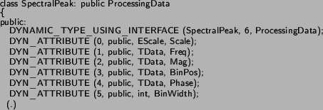

Next: Configurations Up: Data Infrastructure Previous: Dynamic Types
Therefore, one of the main traits of CLAM is the ability to process multiple data types related to the audio and music domain. All these data types are subclasses of the ProcessingData class. In CLAM terminology, a Processing Data class is a class designed for storing all sort of data that will be used in the processing system. All Processing objects are input Processing Data objects (either through Ports when connected in a Network or as arguments of the non-network Do() operation). Examples of already provided Processing Data classes include Spectrum, Audio, SpectralPeakArray, Fundamental, Segment, or Frame (see section 3.2.1).
Any PD class is in fact a concrete Dynamic Type class therefore and as just explained most of their attributes are macro-derived dynamic attributes (i.e. in the code you will see something like DYN_ATTRIBUTE(1,public, Spectrum, ResidualSpectrum), which means that the given class has a public dynamic attribute called ResidualSpectrum that is an object of the Spectrum class).
All dynamic attributes have associated automatically derived Setters and Getters that may be used from outside the class. Furthermore, they can be Added and Removed at run-time as explained in the previous paragraphs.
Some classes have private dynamic attributes that cannot be accessed directly but through a given public interface. If you encounter a private or protected attribute with a name starting with the 'pr' prefix (i.e. prSize) you should look for its associated public interface (i.e. GetSize() and SetSize()). Also very rarely, some PD class have an attribute that is not dynamic. In that case, the corresponding Set/Get interface should be offered so its usage is not different than that of a Dynamic Attribute.
Most PD classes offer convenient shortcuts for accessing and setting elements in their buffers that should be very useful in a developing stage but should be avoided if seeking efficiency in a given algorithm.
A data storage class derives publicly from ProcessingData. Thus, it
is a concrete Dynamic Type class and must use the DYNAMIC_TYPE_USING_INTERFACE
macro.
Ex:

Apart from the default constructor (already available as a result of the Dynamic Type macros), other constructors may be implemented. All these constructors must call the constructor of the ProcessingData base class using the member initialization syntax and passing the number of Dynamic Attributes as parameter. Apart from that, these constructors must call a macro-derived method called MandatoryInit(), which is in charge of initializing concrete Dynamic Type's internal structure.
Another initializer that is often useful is the DefaultInit() method. This method has to be implemented by the developer and is in charge of initializing default attributes and values. This method is automatically called from the Processing Data's default constructor and may also be called from all other constructors.
The most usual non-default constructors that a Processing Data class is bound to have are the Copy constructor and the Configuration constructor. The former is already implemented in the ProcessingData base class and this implementation is sufficient as long as all attributes of the concrete class are Dynamic and require no initialization. If not (for example if the class has a non Dynamic member), the developer may make use of the CopyInit() method. This method has to be implemented by hand, but is automatically called from the macro derived Copy constructor.
The configuration constructor is sometimes desirable for constructing a Processing Data out of its associated configuration object or out of some sort of initial value (flags, size.). In this case the constructor must explicitly call the MandatoryInit() method and then call any other necessary configuration methods.
2004-10-18